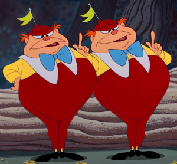

To understand the context of this problem, read the class #04 exercise sheet. After the deadline the problem stays open on Mooshak, but submissions no longer count towards your grade.
In this problem you should submit a function as described. Inside the function do not print anything that was not asked!
The name of the .py source file you submit to Mooshak should NOT start with a digit (you will get an error if you submit it like that).

Tweedledee and Tweedledum, the twin brothers, are fascinated by Python, not the snake, but the programming language! They wanted to challenge anyone trying to enter Wonderland.One bright afternoon, while wandering through a dense forest of syntax and logic, they had an idea. Tweedledee, always the more straightforward of the two, said, "I want to see if the students can master the art of slicing. It's a very important Python skill!"
Write a function first_last(word) that given a string word returns a tuple containing (a,b,c) where a is its first character, b is its last character and c is the remainder of the word without the first and last characters.
The following limits are guaranteed in all the test cases that will be given to your program:
| 2 ≤ |word| ≤ 100 | size of the input string |
Example Function Calls
print(first_last("python"))
print(first_last("oh"))
print(first_last("123456"))
Example Output
('p', 'n', 'ytho')
('o', 'h', '')
('1', '6', '2345')